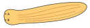

Experimental design · Glide
Williams tandem glider
The two wing pairs share the lift. Raising both sides may help the glider roll back toward level after a small tilt.
Open the workshop
What you need
One printed sheet of ordinary paper, scissors and a ruler. Ask a grown-up to help cut.
Print the pattern
Print at 100% (Actual size) and check the 50 mm scale on the sheet with a ruler.
Try this flight test
Experimental design. Use the flight test to record how your build behaves.
Give it five gentle, level pushes indoors from the same line and height. Then raise the tips slightly and try five more.
Archibald Williams · Things To Make · Paper Gliders, Fig. 128 (Model B)
See the other models
-

Ring glider
Experimental design · Glide
-

Maple spinner
Experimental design · Spin